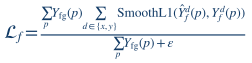
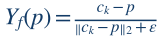
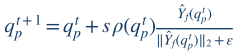
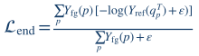

01
Foreground loss
Binary cross-entropy and Dice loss learn the nucleus foreground region.
Multi-Level Self-Supervised Features for Nucleus Instance Segmentation
NeuraVision Lab · Department of Computer Engineering · Bilkent University
Nucleus instance segmentation and counting are essential for quantitative microscopy, enabling reliable analysis of cell populations, tissue organization, and disease-related changes. However, accurately separating touching nuclei remains difficult, and many existing approaches rely on computationally expensive models or sensitive post-processing procedures. We present DINO-Nucleus, an efficient framework that leverages multi-level self-supervised DINOv2 representations for nucleus instance segmentation and counting. The model jointly predicts nucleus regions, pixel-wise instance flows, and explicit nucleus centers, while a consistency objective encourages the predicted flows to converge toward their corresponding centers. Multi-level transformer features provide complementary spatial and semantic information, and the pretrained backbone is adapted using lightweight LoRA modules to reduce fine-tuning cost. Experimental results show that DINO-Nucleus achieves strong segmentation and counting performance while remaining computationally efficient. These findings demonstrate that parameter-efficient adaptation of multi-level self-supervised features can provide an effective solution for nucleus instance segmentation in microscopy images.
Learning nucleus regions, centers, and pixel-wise directions from fused DINOv2 features.
DINO-Nucleus combines intermediate representations from DINOv2 ViT-S/14 (layers 2, 5, 8, and 11) with high-resolution CNN features. A shared decoder makes three predictions, each supervised by a corresponding objective.
Binary cross-entropy and Dice loss learn the nucleus foreground region.
Gaussian focal loss supervises a center heatmap, built from interior nuclei centers.

Foreground-masked Smooth L1 supervises the predicted directions within nucleus regions.

Each foreground pixel points to an interior nucleus center; background flow is zero.
Local flow regression alone does not guarantee that trajectories reach valid centers. We differentiably integrate each foreground pixel's predicted flow, then encourage its endpoint to lie at a nucleus-center response.


Loss weights: 1.0 foreground · 0.5 center · 0.5 flow · 0.05 endpoint, with a warm-up schedule for consistency.
670 microscopy images · instance matches at IoU > 0.45.
| Method | Dice ↑ | IoU ↑ | Obj. F1 ↑ | PQ ↑ | AJI ↑ | MAE ↓ | Pearson ↑ |
|---|---|---|---|---|---|---|---|
| TC-UNet++ | 92.46 | 88.51 | 83.64 | 72.33 | 77.59 | 9.19 | 89.70 |
| Cellpose3 | 88.71 | 81.34 | 88.52 | 76.69 | 83.13 | 5.97 | 93.39 |
| StarDist | 85.94 | 81.07 | 83.06 | 70.05 | 75.93 | 9.72 | 87.62 |
| CellViT | 90.22 | 84.35 | 90.75 | 77.40 | 85.35 | 5.63 | 94.58 |
| DINOv2 | 90.98 | 86.16 | 83.51 | 74.88 | 79.28 | 7.47 | 89.20 |
| DINO-Nucleus | 90.45 | 85.30 | 92.38 | 79.33 | 88.97 | 3.11 | 98.75 |
Numbers are reported in Table 1 of the MICAD 2026 paper; they have not yet been reproduced using the new codebase. Scores follow the paper's scale.
DINO-Nucleus brings together transferable self-supervised representations and explicit geometric instance modeling. By combining multi-level DINOv2 features with local image detail and lightweight LoRA adaptation, the framework learns nucleus structure without requiring full backbone fine-tuning.
Joint foreground, center, and flow predictions—linked by an endpoint-consistency objective—allow neighboring nuclei to be separated through their learned trajectories rather than watershed reconstruction. The experiments suggest that this design is particularly effective for instance separation and reliable nucleus counting, offering a practical and parameter-efficient approach to quantitative microscopy.
@inproceedings{sarhangzadeh2026dinonucleus,
title = {DINO-Nucleus: Multi-Level Self-Supervised Features
for Nucleus Instance Segmentation},
author = {Sarhangzadeh, Mohammad and Esmaeilzadeh, Elyar
and Oner, Doruk},
booktitle = {7th International Conference on Medical Imaging
and Computer-Aided Diagnosis (MICAD)},
year = {2026}
}
Provisional conference citation. Publication details such as pages and DOI can be added once available.